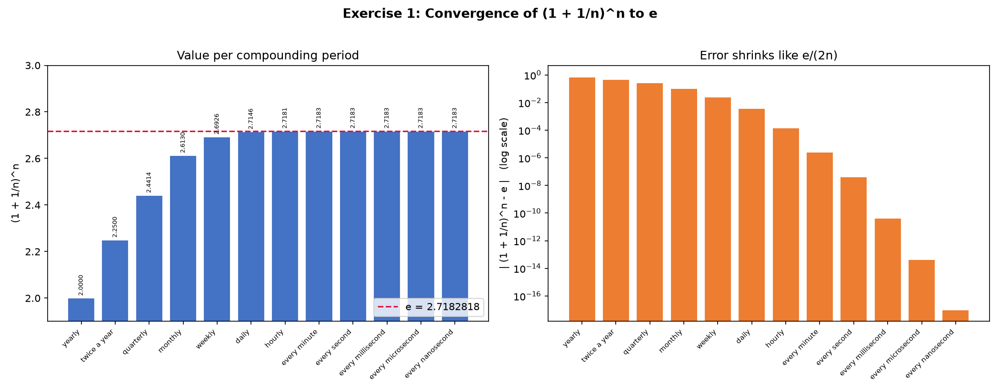
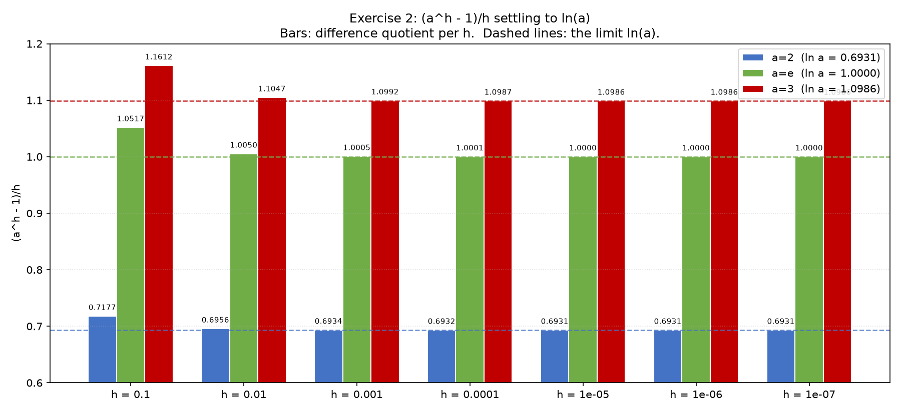
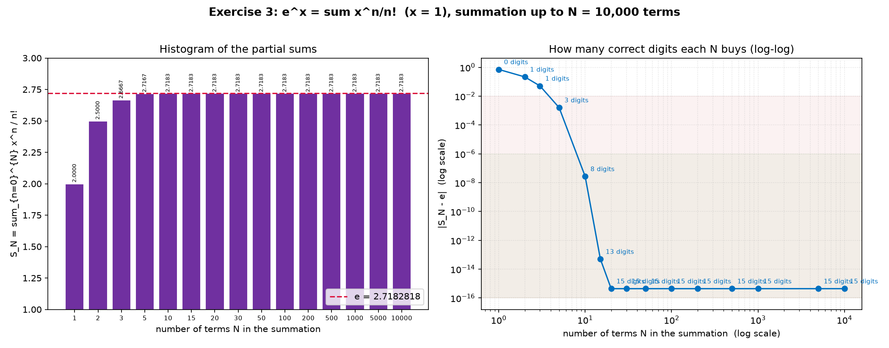

Overview
All three exercises approach the same constant, e = 2.718281828459045…, but from three different directions — a limit of a power, a limit of a difference quotient, and an infinite series. Comparing them reveals how fast each route converges and where floating-point precision becomes the limiting factor.
Exercise 1 — Convergence of (1 + 1/n)n to e
Task: Implement (1 + 1/n)n up to the
nanosecond and draw a histogram.
Concept
If you invest at a 100 % annual rate and compound n
times per year, the growth factor after one year is
(1 + 1/n)n. Compounding more often always yields
more, but the increase shrinks each time, converging to e.
Going from yearly (n=1 → 2.0) to daily (n=365 →
2.7146) already captures three decimals; by every second it is
stable to seven decimals.
Result histogram

Computed table
| How often | n | (1 + 1/n)n | |error| |
|---|---|---|---|
| yearly | 1 | 2.000000 | 7.18e-01 |
| twice a year | 2 | 2.250000 | 4.68e-01 |
| quarterly | 4 | 2.441406 | 2.77e-01 |
| monthly | 12 | 2.613035 | 1.05e-01 |
| weekly | 52 | 2.692597 | 2.57e-02 |
| daily | 365 | 2.714567 | 3.71e-03 |
| hourly | 8760 | 2.718127 | 1.55e-04 |
| every minute | 525600 | 2.718279 | 2.59e-06 |
| every second | 31536000 | 2.718282 | 4.31e-08 |
| every millisecond | 3.15e10 | 2.718282 | 4.31e-11 |
| every microsecond | 3.15e13 | 2.718282 | 4.35e-14 |
| every nanosecond | 3.15e16 | 2.718282 | 0.00e+00 |
e. The right panel plots the absolute error on a log scale; it
falls as a straight line with slope −1, i.e. the error is
proportional to 1/n (more precisely ≈ e/(2n)).
Doubling the compounding frequency roughly halves the error.(1 + 1/n) rounds to exactly 1.0 in double
precision, so (1 + 1/n)n would wrongly return
1.0. The script uses the stable form
exp(n · log1p(1/n)), which stays correct all the way to
the nanosecond.Exercise 2 — Difference quotient (ah − 1)/h → ln(a)
Task: Implement the table for three bases as the step h
shrinks, then draw a histogram.
Concept
This is the very definition of the derivative of ax
evaluated at x = 0:
d/dx [ax] at x=0 = ln(a). The difference quotient is
a finite-step estimate of that derivative. As h
shrinks, the estimate for each base settles onto its natural logarithm.
Result histogram

Computed table (rounded)
| h | a = 2 | a = e | a = 3 |
|---|---|---|---|
| 0.1 | 0.7177 | 1.0517 | 1.1612 |
| 0.01 | 0.6956 | 1.0050 | 1.1047 |
| 0.001 | 0.6934 | 1.0005 | 1.0992 |
| 0.0001 | 0.6932 | 1.00005 | 1.0987 |
| 1e-05 | 0.6931 | 1.0000 | 1.0986 |
| 1e-06 | 0.6931 | 1.0000 | 1.0986 |
| 1e-07 | 0.6931 | 1.0000 | 1.0986 |
| settles at | 0.6931 | 1.0000 | 1.0986 |
O(h), so each 10× reduction in h removes
about one decimal digit of error.e
itself, the limit equals exactly 1 — the unique base
whose exponential passes through slope 1 at the origin. This is why
e is the "natural" base of the logarithm.h,
ah is almost 1, so ah − 1
suffers catastrophic cancellation. The script uses
expm1(h · ln(a))/h, exploiting the identity
ah − 1 = eh ln a − 1, which
keeps full accuracy down to h = 1e-7.Exercise 3 — The exponential series ex = ∑ xn/n!
Task: Implement the series for x = 1, summed up to
N = 10,000 terms, then draw a histogram.
Concept
This is the Maclaurin (Taylor) series of the exponential. For
x = 1 it becomes the celebrated series for e.
The terms 1/n! collapse to zero extremely fast because the
factorial grows faster than any exponential, so the partial sums converge
super-linearly — far faster than the 1/n rate of Exercise 1.
Result histogram

Computed table
| N (terms) | SN | |SN − e| | correct digits |
|---|---|---|---|
| 1 | 2.000000000000000 | 7.18e-01 | 0.1 |
| 2 | 2.500000000000000 | 2.18e-01 | 0.7 |
| 3 | 2.666666666666667 | 5.16e-02 | 1.3 |
| 5 | 2.716666666666666 | 1.62e-03 | 2.8 |
| 10 | 2.718281801146385 | 2.73e-08 | 7.6 |
| 15 | 2.718281828458995 | 5.02e-14 | 13.3 |
| 20 | 2.718281828459046 | 4.44e-16 | 15.4 |
| ≥ 20 … 10000 | 2.718281828459046 | 4.44e-16 | 15.4 |
e within the first ~20 terms. The right log-log plot shows the
error diving vertically (super-linear convergence): ~8 digits correct by
N = 10, ~13 by N = 15, and full double-precision (≈15–16 digits)
by N ≈ 20. Beyond that the error is frozen at the machine-precision
floor of 4.44e-16.1/n!
becomes smaller than machine epsilon (≈2.2e-16), adding it to the
running sum changes nothing — the computer cannot represent the
difference. So summing to N = 10,000 gives the identical result as
N = 20; the remaining ~9,980 terms are numerically invisible.Comparing the Three Routes
| Method | Convergence rate | Terms / periods for ~15 digits | Limiting factor |
|---|---|---|---|
| Ex.1 (1+1/n)n | O(1/n) | ≈ 1015 | very slow; needs huge n |
| Ex.2 (ah−1)/h | O(h) per decade | h ≈ 1e-15 | truncation + cancellation |
| Ex.3 ∑ xn/n! | super-linear | ≈ 20 terms | machine epsilon (4.44e-16) |
The series (Exercise 3) is by far the most efficient way to compute
e, which is why computers and calculators evaluate
exp(x) with a truncated Taylor / rational series rather than
with either limit.